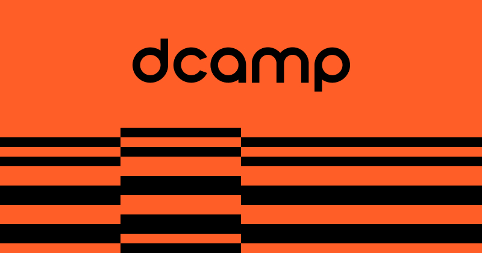

디캠프 D.CAMP
은행권청년창업재단이 운영하는 스타트업 지원 공간·플랫폼
최종 업데이트

디캠프는 어떤 브랜드인가
2012년 국내 시중은행들이 공동 출연한 은행권청년창업재단에 의해 설립되었다. 청년 창업가들에게 사무 공간과 투자 연계, 네트워킹 기회를 제공하는 것을 목적으로 서울 역삼동에서 사업을 시작했다.
디캠프의 브랜드 아이덴티티는 무엇인가
금융권이 직접 대출·투자가 아닌 물리적 공간과 커뮤니티 인프라를 제공하는 방식으로 창업 생태계에 개입한 사례로, 금융자본이 초기 창업 생태계 조성에 참여하는 방식을 보여준다. 공동 사무공간 제공과 정기 데모데이 운영을 통한 창업가-투자자 연결이 핵심 성장 기제였다.
디캠프 연혁 — 주요 사건은 언제였나
디캠프 로고는 어떻게 변해왔나
자주 묻는 질문
디캠프의 브랜드 아이덴티티는 무엇인가요?
금융권이 직접 대출·투자가 아닌 물리적 공간과 커뮤니티 인프라를 제공하는 방식으로 창업 생태계에 개입한 사례로, 금융자본이 초기 창업 생태계 조성에 참여하는 방식을 보여준다.
출처와 검증
브랜드명은 한글과 원어를 함께 표기하되 데이터에 없는 표기는 만들지 않습니다. 기원 국가·설립연도는 검수된 정의문에서 확인된 값을 우선하고, 없을 때만 공식 웹사이트 URL이 일치하는 위키데이터 개체의 값을 씁니다.